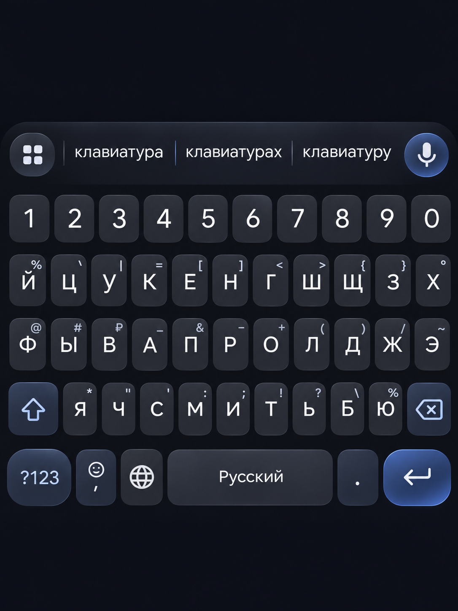
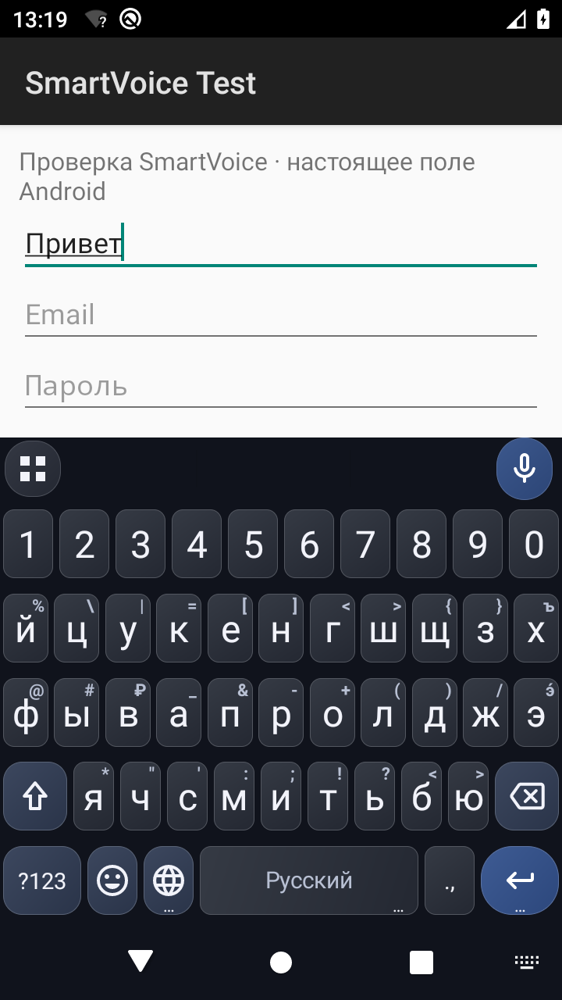
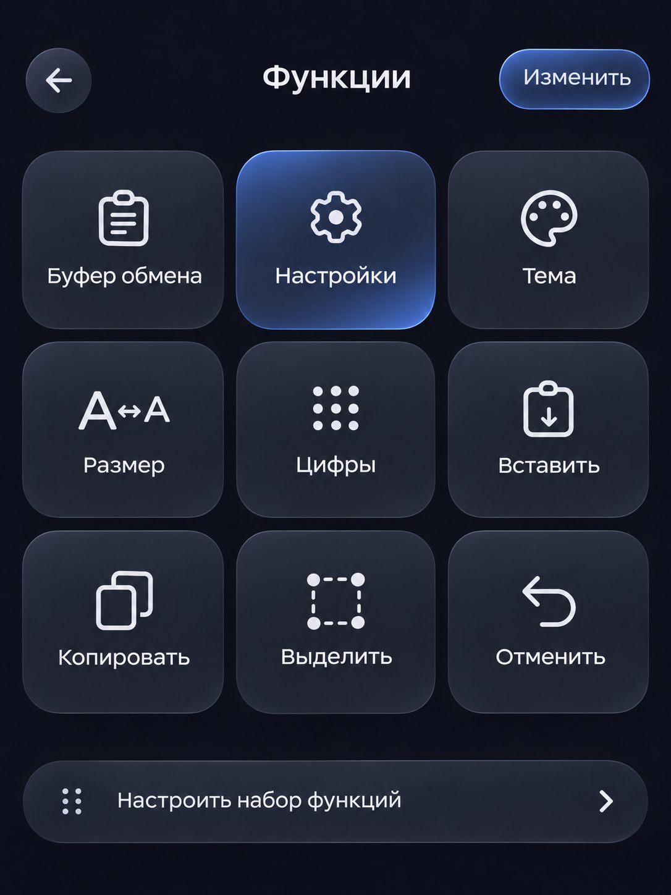
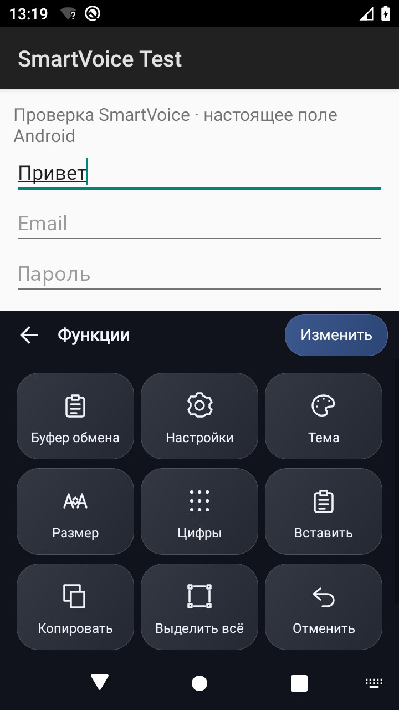
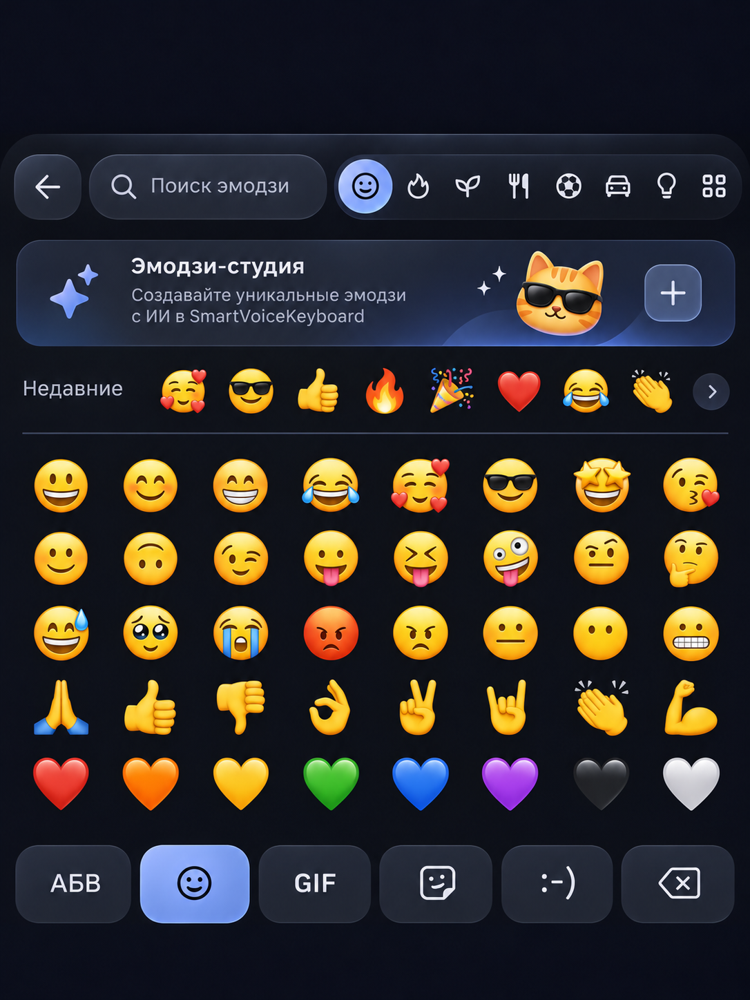
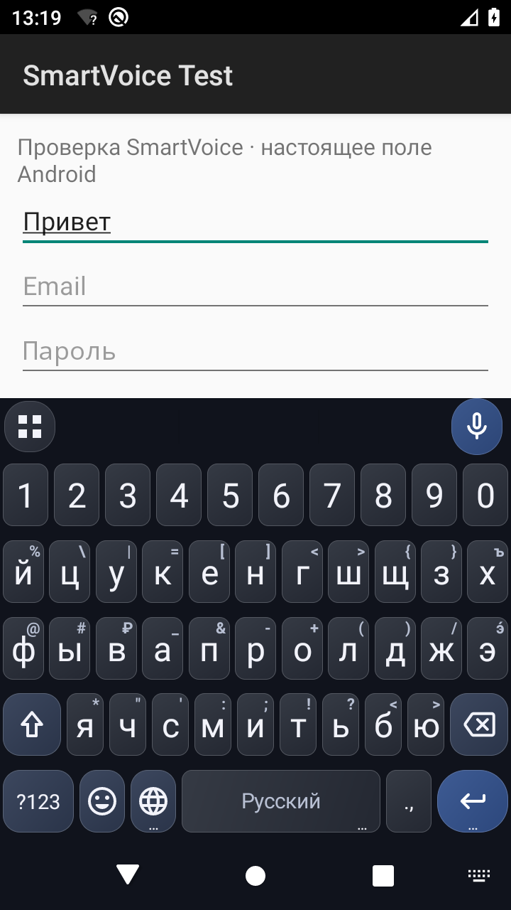
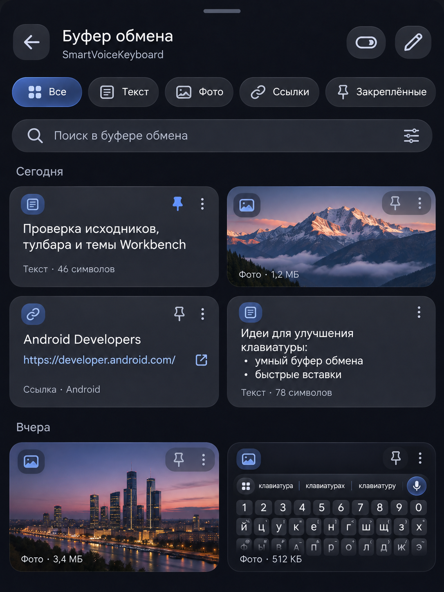
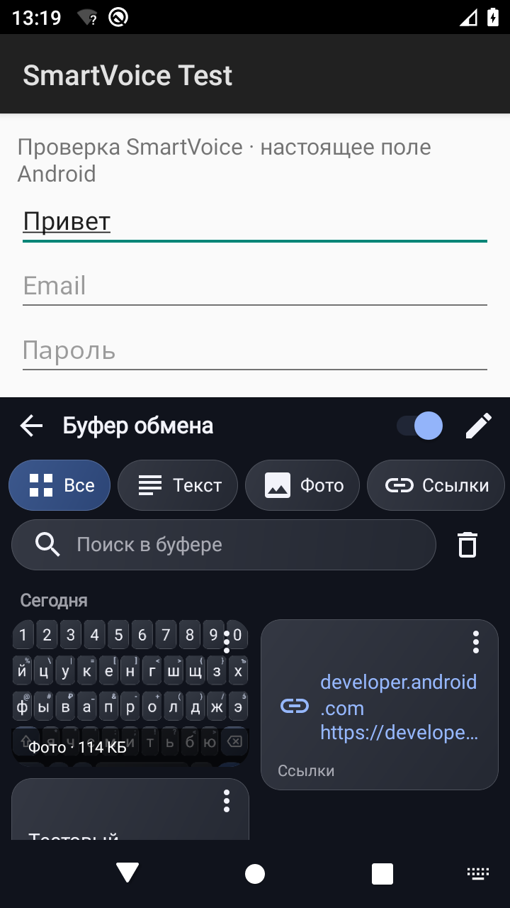

Слева — неизменённые PNG владельца. Справа — снимки реально установленной preview APK в Android. Высота настоящих панелей ограничена IME; концепт-карточки имеют другое соотношение сторон. Справа — полные системные скриншоты Android (screencap), включая реальное тестовое поле ввода. Снимки не являются новыми макетами. В архиве владельца имена 02 и 04 перепутаны; здесь разделы сопоставлены по содержимому.








Скорость и точность ASR требуют телефона пользователя. Программный эмулятор без аппаратного ускорения не является измерителем плавности и распознавания речи.